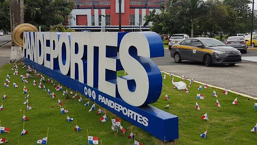
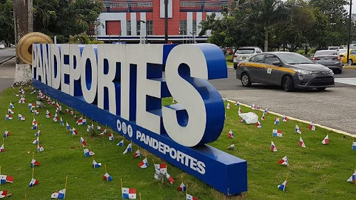

Es el máximo organismo del Gobierno encargado de promover, fomentar, dirigir, orientar y coordinar las actividades deportivas aficionadas en todo el territorio nacional, para contribuir a la cabal y armónica formación corporal, espiritual y moral del hombre panameño, haciéndolo así más apto, para el ejercicio de sus derechos y el cumplimiento de sus deberes como parte de la sociedad y como ciudadano panameño. El Instituto Panameño de Deportes (Pandeportes) con la misión de orientar, fomentar, dirigir y coordinar el desarrollo del deporte y la recreación, con la finalidad de contribuir al mejoramiento de la calidad de vida de la población panameña, está fundamentada en la Ley Nº 50 del 10 de diciembre de 2007, que reforma la Ley Nº 16 de 3 de mayo de 995, que reorganiza el Instituto Nacional de Deportes (INDE) y que en su artículo 1 dice. El Instituto Nacional de Deportes se denominará Instituto Panameño de Deportes. en adelante Pandeportes y como máximo organismo del deporte, constituye una entidad de Derecho Público con personería jurídica, patrimonio propio y autonomía en su régimen interno. Pandeportes se regirá por las disposiciones de la Ley Nº 50, y quedará sujeto a las políticas de desarrollo económico y social del Gobierno, a la orientación del Órgano Ejecutivo, por conducto del Ministerio de Educación y la fiscalización de la Contraloría General de la República, de conformidad con las disposiciones constitucionales y legales sobre la materia. Además fomentará el desarrollo de la actividad física, atendiendo los preceptos constitucionales, la cual incluye la actividad física, la recreación y del deporte. La Ley Nº 50, como parte de la Administración y Organización, crea el Consejo Nacional de la Actividad Física, el Deporte y la Recreación como máximo organismo del Instituto Panameño de Deportes (PANDEPORTES).
El Instituto Panameño de Deportes (Pandeportes), originalmente fue creado como Instituto Nacional de Cultura y Deportes (INCUDE) por el Decreto Ley Nº 144 del 2 de junio de 1970, pero en 1974 se separó la cultura y el deporte mediante la Ley Nº 63. Con la Ley Nº 16 del 3 de mayo de 1995 pasó a ser el Instituto Nacional de Deportes (INDE) y la Ley Nº 50 del 10 de diciembre de 2007 lo reorganizó como Instituto Panameño de Deportes (PANDEPORTES).
El Deporte Competitivo y de Alto Rendimiento en la República de Panamá, se encuentra regulado por medio de Ley 16 de 3 de mayo de 1995, modificada por la Ley 50 de 10 de Diciembre de 2007, modificada por la ley 9 de 22 de febrero de 2011, proferida por el Consejo nacional de la actividad física, el deporte y la recreación del Instituto Panameño de Deportes.

 
